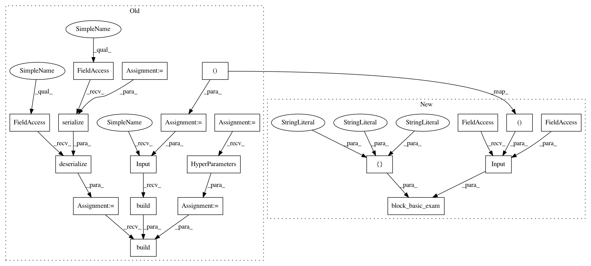

2e3ecf5ad4817912b14f8e17625aaa24185081c6,tests/autokeras/hypermodels/basic_test.py,,test_conv_block,#,53
Before Change
def test_conv_block():
input_shape = (32, 32, 3)
block = basic.ConvBlock()
hp = kerastuner.HyperParameters()
block = graph_module.deserialize(graph_module.serialize(block))
block.build(hp, ak.Input(shape=input_shape).build())
assert utils.name_in_hps("kernel_size", hp)
assert utils.name_in_hps("num_blocks", hp)
assert utils.name_in_hps("separable", hp)
After Change
def test_conv_block():
utils.block_basic_exam(
basic.ConvBlock(),
tf.keras.Input(shape=(32, 32, 3), dtype=tf.float32),
[
"kernel_size",
"num_blocks",
"separable",
])
def test_rnn_block():
utils.block_basic_exam(
In pattern: SUPERPATTERN
Frequency: 3
Non-data size: 20
Instances
Project Name: keras-team/autokeras
Commit Name: 2e3ecf5ad4817912b14f8e17625aaa24185081c6
Time: 2020-05-20
Author: jin@tamu.edu
File Name: tests/autokeras/hypermodels/basic_test.py
Class Name:
Method Name: test_conv_block
Project Name: keras-team/autokeras
Commit Name: 2e3ecf5ad4817912b14f8e17625aaa24185081c6
Time: 2020-05-20
Author: jin@tamu.edu
File Name: tests/autokeras/hypermodels/basic_test.py
Class Name:
Method Name: test_xception_block
Project Name: keras-team/autokeras
Commit Name: 2e3ecf5ad4817912b14f8e17625aaa24185081c6
Time: 2020-05-20
Author: jin@tamu.edu
File Name: tests/autokeras/hypermodels/basic_test.py
Class Name:
Method Name: test_conv_block
Project Name: keras-team/autokeras
Commit Name: 2e3ecf5ad4817912b14f8e17625aaa24185081c6
Time: 2020-05-20
Author: jin@tamu.edu
File Name: tests/autokeras/hypermodels/basic_test.py
Class Name:
Method Name: test_rnn_block